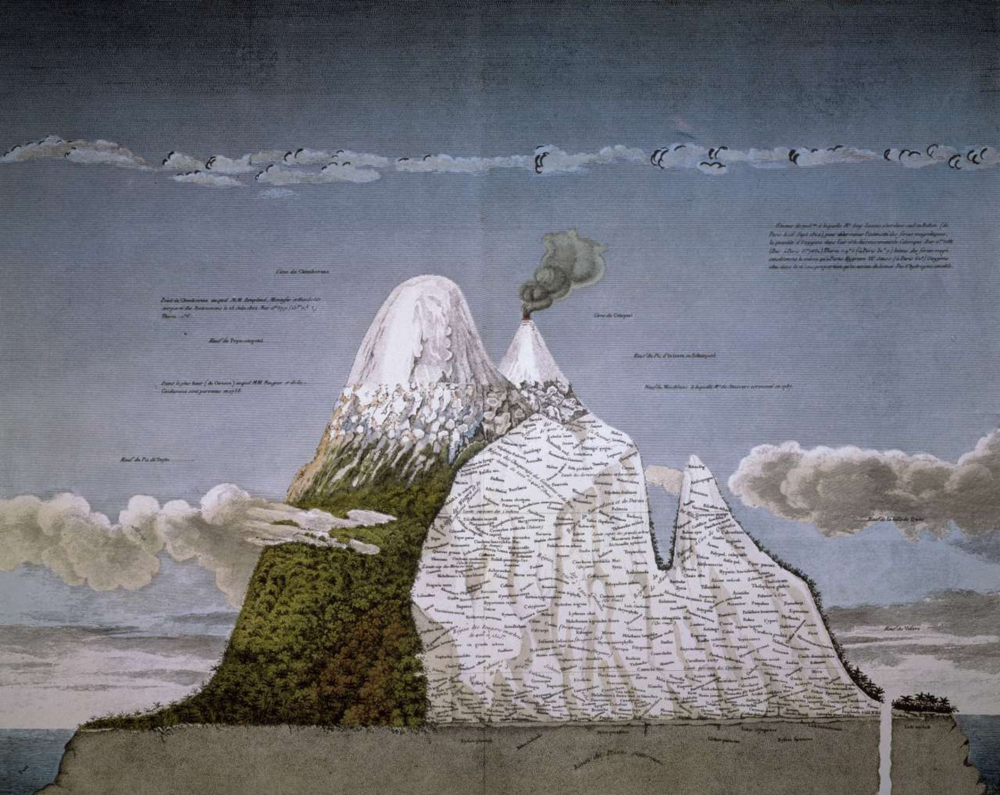
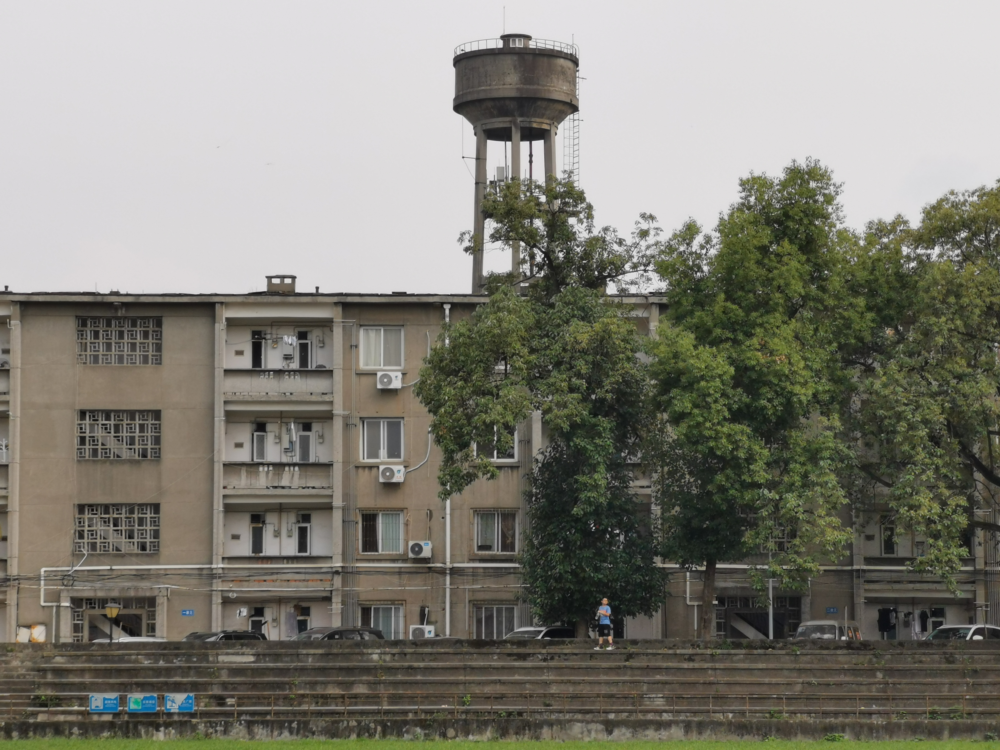

Texture of the Earth and Skin We're In
Geological Thinking, Anthropocene Cinema, and the Imaginations Beyond Humanbeing. An ongoing research project exploring the intersection of media geology and planetary aesthetics.

